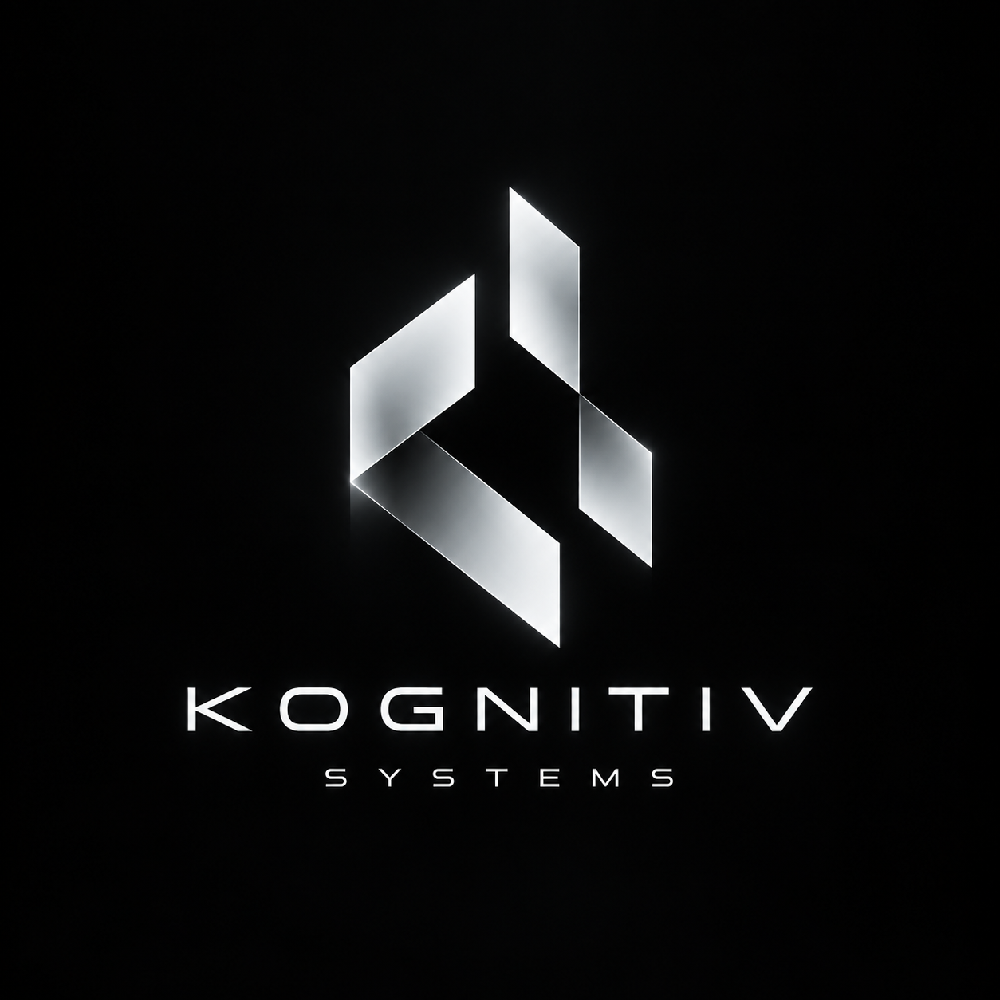

01
RUNTIME
Java that manages itself.
Vesper detects the Java version a Minecraft release actually needs. If it is missing, Vesper can prepare an isolated compatible runtime without changing your global PATH or JAVA_HOME.
WINDOWS · MINECRAFT JAVA
Vesper gets you into Minecraft without turning the launcher into the main event. Launcher 0.5.0 brings optional Vesper Client 0.1.0 Public Beta for Minecraft 26.1.2 and 26.3, alongside Microsoft login, managed Java, instances, mods and skins.
01 / THE LAUNCHER
Everything Vesper does is built around one idea: the launcher should solve problems before you notice them.
RUNTIME
Vesper detects the Java version a Minecraft release actually needs. If it is missing, Vesper can prepare an isolated compatible runtime without changing your global PATH or JAVA_HOME.
MIGRATION
Vesper can migrate compatible user data from Dawn into isolated Vesper instances while leaving the source installation untouched.
INTEGRITY
Game files are checked against official metadata. Damaged or missing files can be repaired instead of making you reinstall everything.
UPDATES
Vesper's updater verifies package signatures. Stable 0.4.0 keeps its existing update channel. Public Beta 0.5.0 is a separate manual download; automatic beta updates are not currently promised.
02 / ORIGIN
Vesper began in 2026 as an independent project: build a focused Minecraft launcher, then keep refining the experience.
The name Vesper comes from evening — the point where daylight gives way to the night. That became the visual language too: winter skies, cold light, quiet interfaces, and a launcher that feels calm instead of crowded.
“Vesper should feel like the moment before the game starts — quiet, cold, and ready.”
— KOGNITIV SYSTEMS03 / SECURITY
Security isn't a badge on the website. It's part of how Vesper is built.
Vesper uses Microsoft's public-client device authorization flow for legitimate Minecraft authentication.
04 / NEXT
Launcher 0.5.0 integrates Client 0.1.0 as an optional Public Beta. Beta support is limited to Minecraft 26.1.2 and 26.3; server rules and third-party compatibility still apply.
Authentication, version management, isolated data, Java automation, migration and updater.
Loader-aware instances, dependency and compatibility checks, Modrinth mod management and skin previews.
Includes Vesper Client 0.1.0 Public Beta: 40 local modules, Studio layouts and presets, world-space Waypoints and Vanilla HUD effects for Minecraft 26.1.2 and 26.3.
Final human acceptance is pending for physical Right Shift, the complete HUD Studio and preset workflow, world-space Waypoints, material-colored Vanilla Armor and Vanilla Hunger Preview. Graphical gameplay acceptance remains open. Full mod/shader compatibility and performance improvements are not guaranteed.
Opt in per compatible instance. Disabled instances stay disabled. Client payloads are included with the manually installed Launcher and applied before an opted-in instance launches. Automatic beta updates are not currently promised. Back up important worlds and settings.
The final automatic 0.4.0 to 0.5.0 installation, relaunch and data-retention path remains untested. This manual prerelease does not claim that acceptance. Stable users are not automatically moved to the beta.
WINDOWS x64
Stable stays on 0.4.0. The optional Client is included with the separately installed 0.5.0 Public Beta.
Tauri updater signatures authenticate update files; they are separate from Windows publisher certificates. The previous Defender Bearfoos detection remains unresolved and is not a proven false positive. Do not disable protection or bypass a malware block.

05 / KOGNITIV SYSTEMS
Vesper is developed under the Kognitiv Systems brand, an independent software project. The brand is not presented as a registered company. The authorized rights holder approved the beta terms and distribution permissions.
Kognitiv Systems is built around one idea: create intelligent software and systems that feel precise, capable and genuinely useful — from AI and security to automation, future robotics and connected tools.